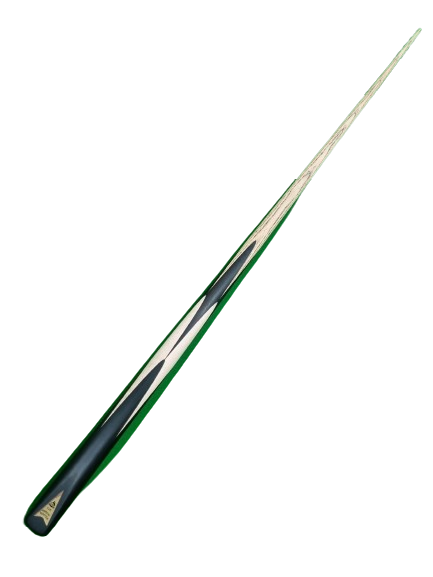
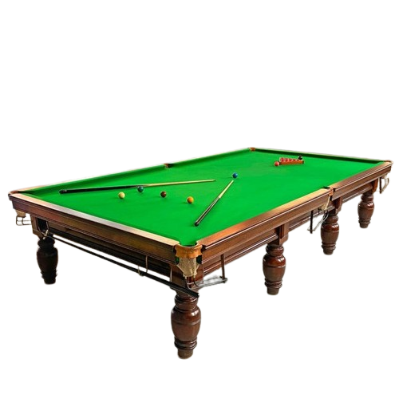
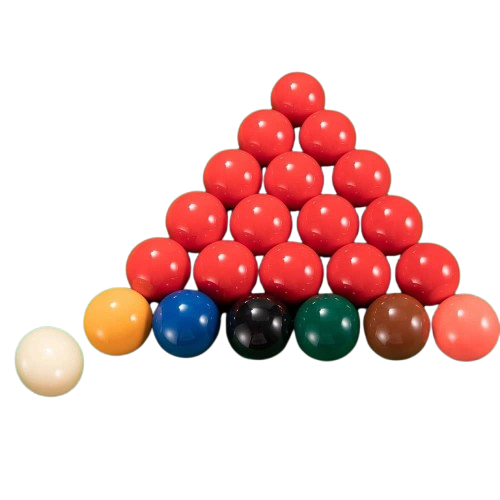
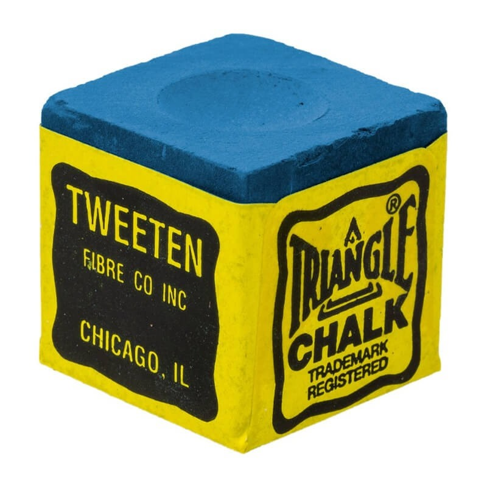
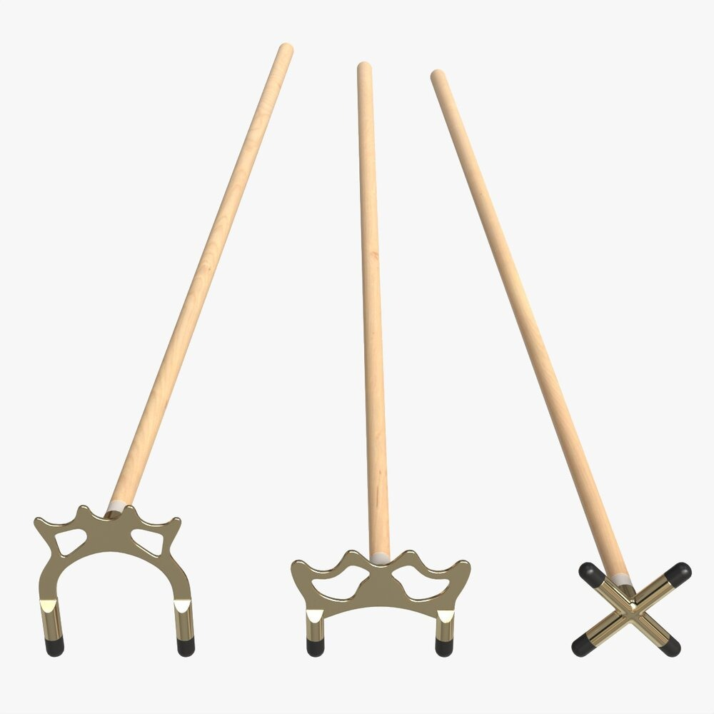

รายชื่อโปรสนุกเกอร์ที่ติดอันดับในเว็ปไซต์
พัทธดนย์ กาชัย (เซียนเบิร์ดโต๊ะฟรี)
- แข่งทั้งหมด: 24 นัด
- ชนะ: 18 นัด
- เปอร์เซ็นต์ชนะ: 75%
- เบรกสูงสุด: 92 แต้ม
- สไตล์: แทงเร็ว
- มุดโต๊ะ: 4 ครั้ง
ธีรเมธ คำจา (เสี่ยเปรมติดโต๊ะ)
- แข่งทั้งหมด: 30 นัด
- ชนะ: 6 นัด
- เปอร์เซ็นต์ชนะ: 20%
- เบรกสูงสุด: 20 แต้ม
- สไตล์: แทงเน้นปลอดภัย
- มุดโต๊ะ: 10 ครั้ง
ศุภฤกษ์ อุดมกสพ (เซียนฟ่างลูกจ้างเฮีย)
- แข่งทั้งหมด: 27 นัด
- ชนะ: 20 นัด
- เปอร์เซ็นต์ชนะ: 74%
- เบรกสูงสุด: 97 แต้ม
- สไตล์: แทงไว ดุดัน
- มุดโต๊ะ: 5 ครั้ง
ผไทภักดิ์ อาจวิจิตร (เซียนพอเพียงเสียบเงียบเหมือนผีแทง)
- แข่งทั้งหมด: 35 นัด
- ชนะ: 26 นัด
- เปอร์เซ็นต์ชนะ: 74.3%
- เบรกสูงสุด: 85 แต้ม
- สไตล์: คม เงียบ แม่นยำ
- มุดโต๊ะ: 7 ครั้ง
ธนกฤต กุณะแสงคำ (เซียนกล้าแทงทะลุโต๊ะ)
- แข่งทั้งหมด: 22 นัด
- ชนะ: 17 นัด
- เปอร์เซ็นต์ชนะ: 77.3%
- เบรกสูงสุด: 90 แต้ม
- สไตล์: กล้าแลก กล้าชน
- มุดโต๊ะ: 3 ครั้ง
ประวัติกีฬาสนุกเกอร์
กีฬาสนุกเกอร์เริ่มต้นในประเทศอังกฤษในศตวรรษที่ 19 โดยได้รับความนิยมอย่างรวดเร็วในหมู่ทหารอังกฤษที่ประจำการในอินเดีย และต่อมาแพร่หลายไปทั่วโลก สนุกเกอร์มีชื่อเสียงระดับนานาชาติ และมีนักกีฬามืออาชีพจากหลายประเทศรวมถึงประเทศไทยด้วย
อุปกรณ์ที่ใช้ในการเล่นสนุกเกอร์
-

ไม้คิว (Cue)
-

โต๊ะสนุกเกอร์ ขนาดมาตรฐาน 12 ฟุต
-

ลูกสนุกเกอร์ (แดง 15 ลูก, สีต่าง ๆ 6 ลูก, ลูกขาว 1 ลูก)
-

ชอล์กทาไม้คิว
-

ไม้ช่วยแทง (สำหรับลูกที่อยู่ไกล)
กติกาการเล่น สนุกเกอร์
สนุกเกอร์เป็นกีฬาที่ใช้ไม้คิวแทงลูกบอลบนโต๊ะผ้าสีเขียว โดยมีเป้าหมายเพื่อเก็บคะแนนให้ได้มากที่สุด โดยผู้เล่นต้องแทงลูกตามลำดับและตามกติกาดังนี้:
- เริ่มต้นด้วยการแทงลูกขาวไปชนลูกแดง (มีทั้งหมด 15 ลูก)
- เมื่อแทงลูกแดงลงหลุม 1 ลูก จะได้ 1 คะแนน และต่อด้วยการเลือกแทงลูกสี (เช่น เหลือง เขียว น้ำตาล ฟ้า ชมพู ดำ)
- ลูกสีจะมีคะแนนต่างกัน:
- เหลือง = 2
- เขียว = 3
- น้ำตาล = 4
- ฟ้า = 5
- ชมพู = 6
- ดำ = 7
- หลังจากแทงลูกสี จะต้องกลับมาแทงลูกแดงสลับกันไปเรื่อย ๆ
- เมื่อไม่มีลูกแดงเหลือบนโต๊ะ ให้แทงลูกสีตามลำดับ: เหลือง → เขียว → น้ำตาล → ฟ้า → ชมพู → ดำ
- หากแทงลูกผิดลำดับ หรือทำฟาวล์ (เช่น แทงลูกขาวลงหลุม) จะเสียคะแนนให้ฝ่ายตรงข้าม
- ผู้ที่ทำคะแนนรวมได้มากที่สุดในแต่ละเฟรม จะเป็นผู้ชนะในเฟรมนั้น
การแข่งขันเต็มรูปแบบมักมีหลายเฟรม ผู้ที่ชนะจำนวนเฟรมมากที่สุดคือผู้ชนะในการแข่งขัน